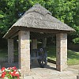

Moussieu l'Editeu
La Merrienne, sûs ses viers jours, s'est mînse à liéthe les gâzettes Angliaises et hier au sé, ou m'dit, en s'frottant l'but du néz auvec ses lunettes, comme ou fait quand ou s'trouve gênée, “l's'affaithes vont mal, man Ph'lip, l's'affaithes vont mal.”
“Oh, je n'sait pas,” j'l'y dit. “V'là les patates tchi qu'menchent à l'vé dans l'gardin, souôs la muthâille, et tes poules sont rouoges comme tout. Ben seûx tchi s'en vont s'mettre à pondre. Epis r'garde le bian temps. Nou pouôrrait être en plien êté.'
On châtchit la tête, “Ch'n'est pas chenna,” ou s'fit. “J'ai liu chutte gâzette ichîn toute la s'maine et touôs les jours l's affaithes empiéthent en Angliéterre. Les pouôres gens là n'ont presqué pas n'nouôrituthe et l'papi dit qu'l'année tchi veint n'y'en étha p't'être pas du tout. Grand doux d'la vie, tchèsqu'y s'en vont faithe?'
“Ne t'gêne pas, ma vieille,” j'l'y dit. “Ch'est du drôle de monde, ches Angliais. Y sont tréjous à lûs pliâindre, mais va les vais au jour d'anniet et tu trouv'thas bêtôt qu'chen qu'tu'as veu sus tan fichu papi n'est qu'du gniolin. Quand l's'Angliais créve'thont d'faim je s'sons dans l'même pité ichîn et je n'vait pon grand dangi d'chonna.”
“Oh, qu'ch'est tant mûs,” ou dit, tout rasseuthée. “J'avais yeu dans l'idée qu'nou pouôrrait lûs envié tchiques suidiches, mais d'pis qu'ch'est d'même, j'pouôrrons les gardé pour les bêtes. Ach'teu y'a eune autre chose. Le papi veur dithe que j'sommes seux d'avé une autre djèrre d'vant long. Absolûment, ch'n'est pas pôssiblye.”
Je m'grattit la tête un mio, épis j'l'y dit qu'si la Russie continuait à faithe de sa bête, nou n'pouvait pas dithe tchèsqu'y s'arriv'thait. “Mais,” j'ajouôtit, “j'ai peine à craithe qu'ou s'emberthéthait dans eune patheille folie. Faut espéthé qu'la providence y'apprendra un mio d'bouon sens, car eune autre djérre che s'sait la fin de monde.”

“N'en pâsle pas, j't'en prie,” ou dit. “Si j'tions prêts, ocquo. Mais quand tu pense que j'n'avons pas d'Milice pour nos d'fendre. Pas seulement un corpotha. Et chu canon-là tchi tait au bas d'Biaumont, et tch'éthait êffrité ches Russes, tchèsque ils en ont fait? Ont-y même un bathi d'poudre?”
J'eut à souôrithe un mio.
“Ma pouôre Merrienne,” j'l'y dit, “tu'est ocquo dans les viers temps. Des corpothaux et des viers canons n'servent à rein ach'teu. Si par malheu y v'nait eune autre djêrre et qu'yunne de ches bombes tch'exterminites les Japonais v'nait à tchais sus Jêrri, che s'sait fini. J'pouorrâimes tous dithe â bétôt à nos pathens et nos n'allé au royaume des taupes.”
“Tu m'fais peûx, tu sais ben Ph'lip,” ou dit. “Est-che la véthite que tu m'dis là, ou est-che ocquo de tes bêtises?”
“Un mio des deux,” j'l'y raiponnit, “mais faut espéthé que tout touôn'na pour les mûs. Et ach'teu, si j'avions eune bouochie”
PH'LIP
13/3/1948
Viyiz étout: